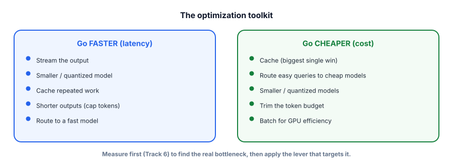

Capstone: a cost & latency-optimized chat service
The final project: a production-style chat service that wraps an LLM with the serving levers from Track 8 — caching, routing, streaming, token budgeting — and measures the savings. It’s the difference between a demo and something you could actually run at scale, and it completes your end-to-end engineer’s toolkit.
What you’re building
A chat service that, for each request: checks a cache, routes easy queries to a small model and hard ones to a bigger one, trims the prompt to a token budget, streams the response, and records cost and latency metrics so you can prove the optimizations work. Free and local via Ollama (a small and a larger model).

$ pip install ollama
$ ollama pull llama3.2:1b # small/fast (cheap path)
$ ollama pull llama3.1:8b # larger/capable (hard path)The optimized service
import time, ollama
cache = {} # exact cache (Track 8.3)
metrics = {"requests": 0, "cache_hits": 0, "small": 0, "big": 0, "latency": []}
def route(msg): # model routing (Track 8.4)
hard = any(w in msg.lower() for w in ["analyze", "explain why", "design", "prove", "compare"])
return "llama3.1:8b" if hard or len(msg) > 300 else "llama3.2:1b"
def trim_history(history, keep=6): # token budgeting (Track 8.7)
return history[-keep:] # keep recent turns (or summarize older — Track 4.5)
def chat(msg, history=None, stream=True):
metrics["requests"] += 1
t0 = time.time()
if msg in cache: # 1) CACHE: instant, free
metrics["cache_hits"] += 1
metrics["latency"].append(time.time() - t0)
return cache[msg]
model = route(msg) # 2) ROUTE: right-size the model
metrics["small" if "1b" in model else "big"] += 1
messages = trim_history(history or []) + [{"role": "user", "content": msg}]
if stream: # 3) STREAM: low perceived latency (Track 8.2)
out = ""
for chunk in ollama.chat(model=model, messages=messages, stream=True,
options={"num_predict": 400}): # cap output tokens
tok = chunk["message"]["content"]
print(tok, end="", flush=True)
out += tok
else:
out = ollama.chat(model=model, messages=messages)["message"]["content"]
cache[msg] = out # store for next time
metrics["latency"].append(time.time() - t0)
return out
def report(): # prove the optimizations (Track 6 + 8)
n = metrics["requests"] or 1
print(f"\nrequests: {n} cache hit-rate: {metrics['cache_hits']/n:.0%}")
print(f"routed → small: {metrics['small']}, big: {metrics['big']}")
lat = metrics["latency"]
print(f"avg latency: {sum(lat)/len(lat):.2f}s (cache hits ≈ 0s)")- It composes caching + routing + streaming + token budgeting into one coherent service.
- It measures cache hit-rate, routing split, and latency — proving the optimizations, not just claiming them.
- You can quantify savings: “caching cut X% of calls, routing sent Y% to the small model, avg latency dropped to Z.”
- It’s the “make it production-ready” story interviewers love — affordable and fast, with the numbers to back it.
- Free and local, with two real models to demonstrate routing.
1. Add a semantic cache (Track 8.3): embed queries and reuse answers for similar (not just identical) questions, with a tuned threshold.
2. Add token counting (Track 8.1) to estimate cost per request and per day, and log it.
3. Add guardrails (Track 7): input/output moderation around the service.
4. Wrap it in a small web API (FastAPI) with Server-Sent Events so the browser streams tokens.
5. Combine with RAG (14.1) so the service answers from your docs and is optimized.
▸ The interview narrative
“I built a chat service designed for production economics. Per request it checks a cache (a big share of real traffic repeats), routes easy queries to a small model and hard ones to a larger one, trims the history to a token budget, streams the response for low perceived latency, and caps output length.
Crucially, it records metrics — cache hit-rate, routing split, latency — so I can prove the savings rather than assume them. I’d measure first to find the real bottleneck, then apply the lever that targets it.” This proves you can take a feature from “works” to “affordable and fast at scale,” which is what separates a prototype from a product.
The service tracks cache hit-rate, routing split, and latency. Why is measuring these as important as implementing the optimizations?
In a cost/latency-optimized chat capstone, what proves the optimization worked?
Look back at the arc. You started with “what is a token?” and you can now build, evaluate, secure, and serve real LLM products: a grounded RAG assistant, a guarded tool-using agent, a reusable eval harness, a fine-tuned domain model, and a cost-optimized chat service — every one of them running for $0. More importantly, you have the judgment that ties them together: when to use RAG vs fine-tuning vs prompting, how to know something works, what can go wrong, and how to make it fast and cheap. That judgment, plus a portfolio of running projects, is exactly what a job-ready applied GenAI engineer looks like.
- Build the capstones — start with the RAG assistant (14.1) and the eval harness (14.3); they anchor every interview.
- Put them on GitHub with clear READMEs (decisions, eval results, “what’s next”) — your portfolio.
- Rehearse the interview bank (Track 15) out loud until the answers are automatic.
- Keep the flywheel turning — as you learn, fold new failures into your evals; measure, don’t guess.
- Stay grounded: the model is a brilliant, fallible component; your job is the trustworthy system around it.
That’s the whole path — from zero to a job-ready applied GenAI engineer who can ship real, reliable LLM products end to end. The tools will keep changing; the fundamentals, the judgment, and the measure-first discipline you’ve built will not. Now go build something, measure it, and ship it. You’re ready.